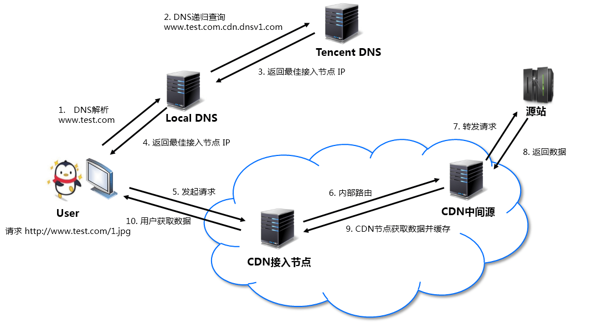

CDN 是什么？ 有多贵？
CDN 是什么？ 为什么 CDN 能加速网站访问？ CDN 有多贵？
一、CDN 是什么？
CDN 的全称是 Content Delivery Network，即内容分发网络。CDN 是构建在现有网络基础之上的智能虚拟网络，依靠部署在各地的边缘服务器，通过中心平台的负载均衡、内容分发、调度等功能模块，使用户就近获取所需内容，降低网络拥塞，提高用户访问响应速度和命中率。CDN 的关键技术主要有内容存储和分发技术。
CDN 这个概念始于1996年，是美国麻省理工学院的一个研究小组为改善互联网的服务质量而提出的。为了能在传统IP网上发布丰富的宽带媒体内容，他们提出在现有互联网基础上建立一个内容分发平台专门为网站提供服务，并于 1999 年成立了专门的 CDN 服务公司，为 Yahoo 提供专业服务。由于 CDN 是为加快网络访问速度而被优化的网络覆盖层，因此被形象地称为“网络加速器”。
二、CDN 加速原理
2.1、原理
以接入腾讯云 CDN 为例，假设业务源站域名为 www.test.com，域名接入 CDN 开始使用加速服务后，当用户发起 HTTP 请求时，实际的处理流程如下图所示：

详细说明如下：
- 用户向
www.test.com下的某图片资源（如：1.jpg）发起请求，会先向 Local DNS 发起域名解析请求。 - 当 Local DNS 解析
www.test.com时，会发现已经配置了 CNAMEwww.test.com.cdn.dnsv1.com，解析请求会发送至 Tencent DNS（GSLB），GSLB 为腾讯云自主研发的调度体系，会为请求分配最佳节点 IP。 - Local DNS 获取 Tencent DNS 返回的解析 IP。
- 用户获取解析 IP。
- 用户向获取的 IP 发起对资源 1.jpg 的访问请求。
- 若该 IP 对应的节点缓存有 1.jpg，则会将数据直接返回给用户（10），此时请求结束。若该节点未缓存 1.jpg，则节点会向业务源站发起对 1.jpg 的请求（6、7、8），获取资源后，结合用户自定义配置的缓存策略（可参考产品文档中的缓存过期配置，将资源缓存至节点（9），并返回给用户（10），此时请求结束。
2.2、解决什么问题？
CDN 有效地解决了目前互联网业务中网络层面的以下问题：
- 用户与业务服务器地域间物理距离较远，需要进行多次网络转发，传输延时较高且不稳定。
- 用户使用运营商与业务服务器所在运营商不同，请求需要运营商之间进行互联转发。
- 业务服务器网络带宽、处理能力有限，当接收到海量用户请求时，会导致响应速度降低、可用性降低。
且 CDN 接入比较简单，源站无需调整自身业务结构，或是进行复杂的操作配置，即可享受全球 CDN 加速服务。
三、CDN 究竟有多贵？
这里我找了 5 家不同的云厂商 CDN 产品来对比他们的价格，但需要注意的是：
- 此处的价格对比仅针对中国大陆
- 仅对比 100G / 500G / 1TB 三个档位的资源包价格
- 资源包有效期都选择 1 年
先说结论：腾讯云的价格是最低的。
100G 1年有效期的资源包：价格从 17~21 元不等，腾讯云价格最低，七牛云价格最高。
500G 1年有效期的资源包：价格从 90-100 元不等，京东云价格最低，又拍云价格最高。
1TB 1年有效期的资源包：价格从 165-270 元不等，腾讯云价格最低，又拍云价格最高。
3.1、七牛云
100G 档 21 元
500G 档 99 元
1TB 档 189 元
CDN中国大陆资源包：官网链接
七牛云的特色是支持 全时段 / 日间 / 闲时 三种不同价格的资源包，价格也不同，可以根据自己的业务需求有针对性的购买。
3.2、又拍云
100G 档 20 元
500G 档 100 元
1TB 档 270 元
CDN 大陆流量包购买：官网链接
又拍云有额外限制：100GB、500GB 属于特惠流量包，只能二选一，且在有效期三个月内仅可购买一次
3.3、京东云
100G 档 18 元
500G 档 90 元
1TB 档 180 元
CDN资源包：官网链接
3.4、腾讯云
100G 档 17 元
500G 档 84 元
1TB 档 165 元
CDN流量包：官网链接
不愧是良心云，价格优势巨大。
3.5、阿里云
100G 档 20 元
500G 档 95 元
1TB 档 180 元
CDN/全站加速资源包：官网链接
REF
CDN 百度百科：https://baike.baidu.com/item/CDN
腾讯云 CDN 产品概述：https://cloud.tencent.com/document/product/228/2939